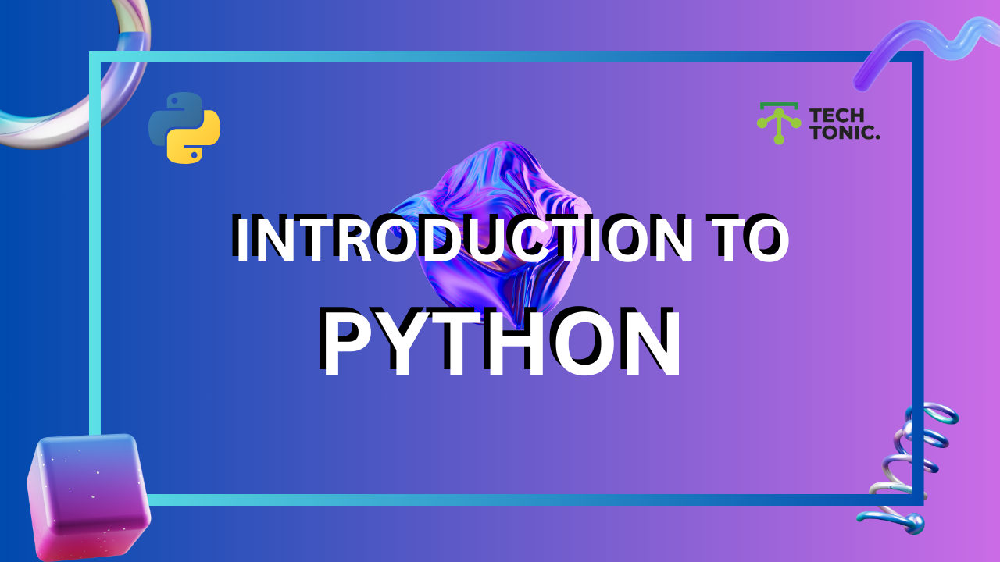

A Python list is an ordered, mutable collection that can hold items of various data types. Lists are versatile and widely used in Python for data manipulation.
Use square brackets [] to define a list. Items are separated by commas ,.
Examples
# Simple list of strings
pets = ["dog", "cat", "rabbit"]
print(pets)
# List with mixed data types
mixed_list = ["dog", 21, True]
print(mixed_list)
list() Constructor # Creating a list using the constructor
pets = list(("dog", "cat", "rabbit"))
print(pets) # Output: ['dog', 'cat', 'rabbit']
List indexing starts at 0. Use indices to access specific elements.
Examples
pets = ["dog", "cat", "rabbit"]
print(pets[0]) # Output: dog
print(pets[2]) # Output: rabbit
Negative indices start from -1 for the last item.
pets = ["dog", "cat", "rabbit"]
print(pets[-1]) # Output: rabbit
print(pets[-2]) # Output: cat
Use a colon : to access a range of items.
pets = ["dog", "cat", "rabbit", "fish", "hamster"]
# From index 1 to 3 (excluding 3)
print(pets[1:3]) # Output: ['cat', 'rabbit']
# Shortcut examples
print(pets[:2]) # Output: ['dog', 'cat'] # Start from beginning
print(pets[2:]) # Output: ['rabbit', 'fish', 'hamster'] # Till the end
append() Adds an item to the end of the list.
pets = ["dog", "cat"]
pets.append("rabbit")
print(pets) # Output: ['dog', 'cat', 'rabbit']
insert() Adds an item at a specific index.
pets = ["dog", "cat", "fish"]
pets.insert(1, "rabbit") # Insert at index 1
print(pets) # Output: ['dog', 'rabbit', 'cat', 'fish']
pop() Removes the last item (default) or an item at a specified index.
pets = ["dog", "cat", "rabbit"]
pets.pop() # Remove last item
print(pets) # Output: ['dog', 'cat']
remove() Deletes an item by value.
pets = ["dog", "cat", "rabbit"]
pets.remove("cat")
print(pets) # Output: ['dog', 'rabbit']
del Keyword Deletes an item by index or clears the list.
pets = ["dog", "cat", "rabbit"]
del pets[1] # Delete 'cat'
print(pets) # Output: ['dog', 'rabbit']
pets = ["dog", "cat", "rabbit"]
print(len(pets)) # Output: 3
pets = ["dog", "cat", "rabbit"]
pets[2] = "fish"
print(pets) # Output: ['dog', 'cat', 'fish']
pets = ["dog", "cat", "rabbit"]
print("dog" in pets) # Output: True
nums1 = [1, 2, 3]
nums2 = [4, 5, 6]
nums1.extend(nums2)
print(nums1) # Output: [1, 2, 3, 4, 5, 6]
pets = ["dog", "cat", "rabbit"]
for pet in pets:
print(pet)
An elegant way to create or modify lists.
# Create a list of squares
squares = [x**2 for x in range(5)]
print(squares) # Output: [0, 1, 4, 9, 16]
["apple", "banana", "cherry"]."kiwi" to the list ["apple", "banana"] and print the updated list."banana" from the list ["apple", "banana", "cherry"].["cat", "dog", "fish"].["red", "green", "blue"].[1, 2, 3] and [4, 5, 6] into one list.[5, 10, 15] by replacing 10 with 12.["a", "b", "c", "d"] and print it.[1, 2, 3, 2, 4, 5, 1].[3, 1, 4, 1, 5, 9] in descending order without using the sort() method.[[1, 2], [3, 4], [5, 6]] into a single list [1, 2, 3, 4, 5, 6].A set in Python is an unordered collection of unique items. Sets are commonly used for storing unique elements, performing set operations, and removing duplicates.
You can create a set using curly brackets {} or the set() constructor.
# Using curly brackets
fruits = {"apple", "banana", "cherry"}
print(fruits) # Output: {'apple', 'banana', 'cherry'}
# Using the set() constructor
colors = set(["red", "blue", "green"])
print(colors) # Output: {'red', 'blue', 'green'}
Sets cannot contain mutable types like lists, dictionaries, or other sets. They can, however, include immutable types like strings, numbers, and tuples.
Since sets are unordered, they do not support indexing or slicing. However, you can loop through a set.
pets = {"dog", "cat", "rabbit"}
for pet in pets:
print(pet)
# Output (order may vary):
# dog
# cat
# rabbit
You can add elements to a set using:
add(): Adds a single item.update(): Adds multiple items or merges another iterable.# Adding a single item
pets = {"dog", "cat"}
pets.add("rabbit")
print(pets) # Output: {'dog', 'cat', 'rabbit'}
# Adding multiple items
pets.update(["parrot", "fish"])
print(pets) # Output: {'dog', 'cat', 'rabbit', 'parrot', 'fish'}
Sets allow the removal of elements using:
remove(): Removes an item; raises an error if the item is not found.discard(): Removes an item; does not raise an error if the item is not found.pop(): Removes and returns a random item.clear(): Removes all items from the set.pets = {"dog", "cat", "rabbit"}
# Using remove()
pets.remove("cat")
print(pets) # Output: {'dog', 'rabbit'}
# Using discard()
pets.discard("rabbit")
print(pets) # Output: {'dog'}
# Using pop()
pets.pop() # Removes a random item
print(pets) # Output: {}
# Clearing the set
pets = {"dog", "cat"}
pets.clear()
print(pets) # Output: set()
Sets support various operations for combining, comparing, and modifying sets.
Combines two sets, removing duplicates. Use the union() method or the | operator.
x = {1, 2, 3}
y = {3, 4, 5}
print(x.union(y)) # Output: {1, 2, 3, 4, 5}
Finds common items between two sets. Use the intersection() method or the & operator.
print(x.intersection(y)) # Output: {3}
Finds items in one set but not in the other. Use the difference() method or the - operator.
print(x.difference(y)) # Output: {1, 2}
Finds items that are in either set but not in both. Use the symmetric_difference() method or the ^ operator.
print(x.symmetric_difference(y)) # Output: {1, 2, 4, 5}
issubset(): Checks if one set is a subset of another.issuperset(): Checks if one set contains another.isdisjoint(): Checks if two sets have no items in common.Use the in and not in operators to check if an item exists in a set.
fruits = {"apple", "banana", "cherry"}
print("apple" in fruits) # Output: True
print("kiwi" not in fruits) # Output: True
Use the len() function to get the number of items in a set.
fruits = {"apple", "banana", "cherry"}
print(len(fruits)) # Output: 3
"mango" to the set {"apple", "banana", "cherry"}.{"python", "java", "c++"}."dog" from the set {"dog", "cat", "rabbit"}."cat" is in the set {"dog", "cat", "rabbit"}.{1, 2, 3} and {3, 4, 5} using union().{1, 2, 3, 4} and {3, 4, 5, 6}.difference() method to find items in {1, 2, 3, 4} but not in {3, 4, 5, 6}.clear()."hello"{'h', 'e', 'l', 'o'}{1, 2} is a subset of {1, 2, 3}.Tuples in Python are ordered, immutable containers that can hold a collection of items. Tuples are similar to lists but differ in their immutability, meaning their items cannot be modified after creation. This feature makes tuples an excellent choice for storing fixed data that shouldn't change.
Tuples are created using round brackets (). Items are separated by commas.
pets = ("dog", "cat", "rabbit")
print(pets) # Output: ('dog', 'cat', 'rabbit')
mixed = ("dog", 21, True)
print(mixed) # Output: ('dog', 21, True)
tuple() Constructor: pets = tuple(("dog", "cat", "rabbit")) # Note the double parentheses
print(pets) # Output: ('dog', 'cat', 'rabbit')
Tuples support various ways to access their elements using indexing, negative indexing, and slicing.
pets = ("dog", "cat", "rabbit")
print(pets[0]) # Output: 'dog'
print(pets[2]) # Output: 'rabbit'
print(pets[-1]) # Output: 'rabbit' (last item)
print(pets[-2]) # Output: 'cat'
: to specify a range.pets = ("dog", "cat", "rabbit", "fish", "hamster")
print(pets[1:4]) # Output: ('cat', 'rabbit', 'fish')
print(pets[:3]) # Output: ('dog', 'cat', 'rabbit')
print(pets[2:]) # Output: ('rabbit', 'fish', 'hamster')
Use the len() function to determine the number of items in a tuple.
print(len(pets)) # Output: 5
for pet in pets:
print(pet)
# Output:
# dog
# cat
# rabbit
# fish
# hamster
Use the in operator to check if an item exists in the tuple.
print("cat" in pets) # Output: True
print("lion" in pets) # Output: False
You can combine two tuples using the + operator.
pets1 = ("dog", "cat")
pets2 = ("rabbit", "fish")
all_pets = pets1 + pets2
print(all_pets) # Output: ('dog', 'cat', 'rabbit', 'fish')
Since tuples are immutable:
my_tuple = (1, 2, 3)
my_tuple[0] = 10 # Raises an error
my_tuple.append(4) # Raises an error
my_tuple.remove(2) # Raises an error
("red", "blue", "green", "yellow", "purple") to get the middle three items."orange" exists in the tuple ("red", "blue", "green").("apple", "banana", "cherry").("apple", 42, 3.14, "banana", 7).("a", "b", "c", "d", "e") without using len().("hello", "world") → ("HELLO", "WORLD").A dictionary is a collection of unordered, modifiable(mutable) paired (key: value) data type.
To create a dictionary we use curly brackets, {} or the dict() built-in function.
# syntax
empty_dict = {}
# Dictionary with data values
dct = {'key1':'value1', 'key2':'value2', 'key3':'value3', 'key4':'value4'}
Example:
person = {
'first_name':'Asabeneh',
'last_name':'Yetayeh',
'age':250,
'country':'Finland',
'is_marred':True,
'skills':['JavaScript', 'React', 'Node', 'MongoDB', 'Python'],
'address':{
'street':'Space street',
'zipcode':'02210'
}
}
The dictionary above shows that a value could be any data types:string, boolean, list, tuple, set or a dictionary.
It checks the number of 'key: value' pairs in the dictionary.
# syntax
dct = {'key1':'value1', 'key2':'value2', 'key3':'value3', 'key4':'value4'}
print(len(dct)) # 4
Example:
person = {
'first_name':'Asabeneh',
'last_name':'Yetayeh',
'age':250,
'country':'Finland',
'is_married':True,
'skills':['JavaScript', 'React', 'Node', 'MongoDB', 'Python'],
'address':{
'street':'Space street',
'zipcode':'02210'
}
}
print(len(person)) # 7
We can access Dictionary items by referring to its key name.
# syntax
dct = {'key1':'value1', 'key2':'value2', 'key3':'value3', 'key4':'value4'}
print(dct['key1']) # value1
print(dct['key4']) # value4
Example:
person = {
'first_name':'Asabeneh',
'last_name':'Yetayeh',
'age':250,
'country':'Finland',
'is_marred':True,
'skills':['JavaScript', 'React', 'Node', 'MongoDB', 'Python'],
'address':{
'street':'Space street',
'zipcode':'02210'
}
}
print(person['first_name']) # Asabeneh
print(person['country']) # Finland
print(person['skills']) # ['JavaScript', 'React', 'Node', 'MongoDB', 'Python']
print(person['skills'][0]) # JavaScript
print(person['address']['street']) # Space street
print(person['city']) # Error
Accessing an item by key name raises an error if the key does not exist. To avoid this error first we have to check if a key exist or we can use the get method. The get method returns None, which is a NoneType object data type, if the key does not exist.
person = {
'first_name':'Asabeneh',
'last_name':'Yetayeh',
'age':250,
'country':'Finland',
'is_marred':True,
'skills':['JavaScript', 'React', 'Node', 'MongoDB', 'Python'],
'address':{
'street':'Space street',
'zipcode':'02210'
}
}
print(person.get('first_name')) # Asabeneh
print(person.get('country')) # Finland
print(person.get('skills')) #['HTML','CSS','JavaScript', 'React', 'Node', 'MongoDB', 'Python']
print(person.get('city')) # None
We can add new key and value pairs to a dictionary
# syntax
dct = {'key1':'value1', 'key2':'value2', 'key3':'value3', 'key4':'value4'}
dct['key5'] = 'value5'
Example:
person = {
'first_name':'Asabeneh',
'last_name':'Yetayeh',
'age':250,
'country':'Finland',
'is_marred':True,
'skills':['JavaScript', 'React', 'Node', 'MongoDB', 'Python'],
'address':{
'street':'Space street',
'zipcode':'02210'
}
}
person['job_title'] = 'Instructor'
person['skills'].append('HTML')
print(person)
We can modify items in a dictionary
# syntax
dct = {'key1':'value1', 'key2':'value2', 'key3':'value3', 'key4':'value4'}
dct['key1'] = 'value-one'
Example:
person = {
'first_name':'Asabeneh',
'last_name':'Yetayeh',
'age':250,
'country':'Finland',
'is_marred':True,
'skills':['JavaScript', 'React', 'Node', 'MongoDB', 'Python'],
'address':{
'street':'Space street',
'zipcode':'02210'
}
}
person['first_name'] = 'Eyob'
person['age'] = 252
We use the in operator to check if a key exist in a dictionary
# syntax
dct = {'key1':'value1', 'key2':'value2', 'key3':'value3', 'key4':'value4'}
print('key2' in dct) # True
print('key5' in dct) # False
# syntax
dct = {'key1':'value1', 'key2':'value2', 'key3':'value3', 'key4':'value4'}
dct.pop('key1') # removes key1 item
dct = {'key1':'value1', 'key2':'value2', 'key3':'value3', 'key4':'value4'}
dct.popitem() # removes the last item
del dct['key2'] # removes key2 item
Example:
person = {
'first_name':'Asabeneh',
'last_name':'Yetayeh',
'age':250,
'country':'Finland',
'is_marred':True,
'skills':['JavaScript', 'React', 'Node', 'MongoDB', 'Python'],
'address':{
'street':'Space street',
'zipcode':'02210'
}
}
person.pop('first_name') # Removes the firstname item
person.popitem() # Removes the address item
del person['is_married'] # Removes the is_married item
The items() method changes dictionary to a list of tuples.
# syntax
dct = {'key1':'value1', 'key2':'value2', 'key3':'value3', 'key4':'value4'}
print(dct.items()) # dict_items([('key1', 'value1'), ('key2', 'value2'), ('key3', 'value3'), ('key4', 'value4')])
If we don't want the items in a dictionary we can clear them using clear() method
# syntax
dct = {'key1':'value1', 'key2':'value2', 'key3':'value3', 'key4':'value4'}
print(dct.clear()) # None
If we do not use the dictionary we can delete it completely
# syntax
dct = {'key1':'value1', 'key2':'value2', 'key3':'value3', 'key4':'value4'}
del dct
We can copy a dictionary using a copy() method. Using copy we can avoid mutation of the original dictionary.
# syntax
dct = {'key1':'value1', 'key2':'value2', 'key3':'value3', 'key4':'value4'}
dct_copy = dct.copy() # {'key1':'value1', 'key2':'value2', 'key3':'value3', 'key4':'value4'}
The keys() method gives us all the keys of a a dictionary as a list.
# syntax
dct = {'key1':'value1', 'key2':'value2', 'key3':'value3', 'key4':'value4'}
keys = dct.keys()
print(keys) # dict_keys(['key1', 'key2', 'key3', 'key4'])
The values method gives us all the values of a a dictionary as a list.
# syntax
dct = {'key1':'value1', 'key2':'value2', 'key3':'value3', 'key4':'value4'}
values = dct.values()
print(values) # dict_values(['value1', 'value2', 'value3', 'value4'])
🌕 You are astonishing. Now, you are super charged with the power of dictionaries. You have just completed day 8 challenges and you are 8 steps a head in to your way to greatness. Now do some exercises for your brain and muscles.
So far we have seen many built-in Python functions. In this section, we will focus on custom functions. What is a function? Before we start making functions, let us learn what a function is and why we need them?
A function is a reusable block of code or programming statements designed to perform a certain task. To define or declare a function, Python provides the def keyword. The following is the syntax for defining a function. The function block of code is executed only if the function is called or invoked.
When we make a function, we call it declaring a function. When we start using the it, we call it calling or invoking a function. Function can be declared with or without parameters.
# syntax
# Declaring a function
def function_name():
codes
codes
# Calling a function
function_name()
Function can be declared without parameters.
Example:
def generate_full_name ():
first_name = 'Asabeneh'
last_name = 'Yetayeh'
space = ' '
full_name = first_name + space + last_name
print(full_name)
generate_full_name () # calling a function
def add_two_numbers ():
num_one = 2
num_two = 3
total = num_one + num_two
print(total)
add_two_numbers()
Function can also return values, if a function does not have a return statement, the value of the function is None. Let us rewrite the above functions using return. From now on, we get a value from a function when we call the function and print it.
def generate_full_name ():
first_name = 'Asabeneh'
last_name = 'Yetayeh'
space = ' '
full_name = first_name + space + last_name
return full_name
print(generate_full_name())
def add_two_numbers ():
num_one = 2
num_two = 3
total = num_one + num_two
return total
print(add_two_numbers())
In a function we can pass different data types(number, string, boolean, list, tuple, dictionary or set) as a parameter
# syntax
# Declaring a function
def function_name(parameter):
codes
codes
# Calling function
print(function_name(argument))
Example:
def greetings (name):
message = name + ', welcome to Python for Everyone!'
return message
print(greetings('Asabeneh'))
def add_ten(num):
ten = 10
return num + ten
print(add_ten(90))
def square_number(x):
return x * x
print(square_number(2))
def area_of_circle (r):
PI = 3.14
area = PI * r ** 2
return area
print(area_of_circle(10))
def sum_of_numbers(n):
total = 0
for i in range(n+1):
total+=i
print(total)
print(sum_of_numbers(10)) # 55
print(sum_of_numbers(100)) # 5050
# syntax
# Declaring a function
def function_name(para1, para2):
codes
codes
# Calling function
print(function_name(arg1, arg2))
Example:
def generate_full_name (first_name, last_name):
space = ' '
full_name = first_name + space + last_name
return full_name
print('Full Name: ', generate_full_name('Asabeneh','Yetayeh'))
def sum_two_numbers (num_one, num_two):
sum = num_one + num_two
return sum
print('Sum of two numbers: ', sum_two_numbers(1, 9))
def calculate_age (current_year, birth_year):
age = current_year - birth_year
return age;
print('Age: ', calculate_age(2021, 1819))
def weight_of_object (mass, gravity):
weight = str(mass * gravity)+ ' N' # the value has to be changed to a string first
return weight
print('Weight of an object in Newtons: ', weight_of_object(100, 9.81))
If we pass the arguments with key and value, the order of the arguments does not matter.
# syntax
# Declaring a function
def function_name(para1, para2):
codes
codes
# Calling function
print(function_name(para1 = 'John', para2 = 'Doe')) # the order of arguments does not matter here
Example:
def print_fullname(firstname, lastname):
space = ' '
full_name = firstname + space + lastname
print(full_name)
print(print_fullname(firstname = 'Asabeneh', lastname = 'Yetayeh'))
def add_two_numbers (num1, num2):
total = num1 + num2
print(total)
print(add_two_numbers(num2 = 3, num1 = 2)) # Order does not matter
If we do not return a value with a function, then our function is returning None by default. To return a value with a function we use the keyword return followed by the variable we are returning. We can return any kind of data types from a function.
def print_name(firstname):
return firstname
print_name('Asabeneh') # Asabeneh
def print_full_name(firstname, lastname):
space = ' '
full_name = firstname + space + lastname
return full_name
print_full_name(firstname='Asabeneh', lastname='Yetayeh')
Example:
def add_two_numbers (num1, num2):
total = num1 + num2
return total
print(add_two_numbers(2, 3))
def calculate_age (current_year, birth_year):
age = current_year - birth_year
return age;
print('Age: ', calculate_age(2019, 1819))
def is_even (n):
if n % 2 == 0:
print('even')
return True # return stops further execution of the function, similar to break
return False
print(is_even(10)) # True
print(is_even(7)) # False
def find_even_numbers(n):
evens = []
for i in range(n + 1):
if i % 2 == 0:
evens.append(i)
return evens
print(find_even_numbers(10))
Sometimes we pass default values to parameters, when we invoke the function. If we do not pass arguments when calling the function, their default values will be used.
# syntax
# Declaring a function
def function_name(param = value):
codes
codes
# Calling function
function_name()
function_name(arg)
Example:
def greetings (name = 'Peter'):
message = name + ', welcome to Python for Everyone!'
return message
print(greetings())
print(greetings('Asabeneh'))
def generate_full_name (first_name = 'Asabeneh', last_name = 'Yetayeh'):
space = ' '
full_name = first_name + space + last_name
return full_name
print(generate_full_name())
print(generate_full_name('David','Smith'))
def calculate_age (birth_year,current_year = 2021):
age = current_year - birth_year
return age;
print('Age: ', calculate_age(1821))
def weight_of_object (mass, gravity = 9.81):
weight = str(mass * gravity)+ ' N' # the value has to be changed to string first
return weight
print('Weight of an object in Newtons: ', weight_of_object(100)) # 9.81 - average gravity on Earth's surface
print('Weight of an object in Newtons: ', weight_of_object(100, 1.62)) # gravity on the surface of the Moon
If we do not know the number of arguments we pass to our function, we can create a function which can take arbitrary number of arguments by adding * before the parameter name.
# syntax
# Declaring a function
def function_name(*args):
codes
codes
# Calling function
function_name(param1, param2, param3,..)
Example:
def sum_all_nums(*nums):
total = 0
for num in nums:
total += num # same as total = total + num
return total
print(sum_all_nums(2, 3, 5)) # 10
def generate_groups (team,*args):
print(team)
for i in args:
print(i)
print(generate_groups('Team-1','Asabeneh','Brook','David','Eyob'))
#You can pass functions around as parameters
def square_number (n):
return n * n
def do_something(f, x):
return f(x)
print(do_something(square_number, 3)) # 27
🌕 You achieved quite a lot so far. Keep going! You have just completed day 11 challenges and you are 11 steps a head in to your way to greatness. Now do some exercises for your brain and muscles.
print(reverse_list([1, 2, 3, 4, 5]))
# [5, 4, 3, 2, 1]
print(reverse_list1(["A", "B", "C"]))
# ["C", "B", "A"]
food_staff = ['Potato', 'Tomato', 'Mango', 'Milk']
print(add_item(food_staff, 'Meat')) # ['Potato', 'Tomato', 'Mango', 'Milk','Meat']
numbers = [2, 3, 7, 9]
print(add_item(numbers, 5)) [2, 3, 7, 9, 5]
food_staff = ['Potato', 'Tomato', 'Mango', 'Milk']
print(remove_item(food_staff, 'Mango')) # ['Potato', 'Tomato', 'Milk'];
numbers = [2, 3, 7, 9]
print(remove_item(numbers, 3)) # [2, 7, 9]
print(sum_of_numbers(5)) # 15
print(sum_of_numbers(10)) # 55
print(sum_of_numbers(100)) # 5050
print(evens_and_odds(100))
# The number of odds are 50.
# The number of evens are 51.
🎉 CONGRATULATIONS ! 🎉